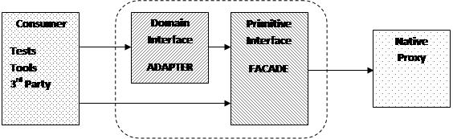

The Half-Domain/Half-Primitive Proxy
I recently spent a few years working in the retail sector building web APIs. Some of these projects were greenfield but I also worked on a number of existing (brownfield) services too. As you might expect working on variations of a theme you start to see patterns developing in the way the services are designed and implemented.
There are apparently only so many ways you can skin a cat and once you have chosen your programing language and web service framework many things naturally fall into place as you have bought into their paradigms. Plenty has been written about these frameworks and how to use them but that’s not the pattern of focus here, this article looks at the other end of the wire – the client proxy – an area with less attention to detail.
When building a web API the ultimate deliverable is the service itself, more commonly these days a REST API using JSON as the wire-level content format. If you’re building an API in the enterprise you may have to support XML too but that seems to be heavily declining as JSON has been the lingua-franca of Internet APIs for some time. The service might be deployed on premise or in the cloud and could be self-hosted, i.e. you own the hosting process, or run as part of a shared web service such as IIS. Hence any client that wants to talk to your service needs to be fluent in HTPP and JSON too. There are plenty of libraries available for handling these low-level details; the client use cases we are interested in though sit just a little higher up the call stack.
The most likely client in the beginning will be the set of acceptance tests used to describe and verify the service’s various behaviours. In something reasonably small and well defined like a web service the balance of the testing pyramid [1] may be skewed in favour of more customer tests and less programmer tests as they provide the perfect opportunity for outside-in [2] development. Yes, unit tests are still highly useful for those behaviours which are much harder to invoke from the outside without exposing back-door endpoints, such as error recovery, but the lion’s share can be invoked by an external client.
Therefore our primary need for a proxy is to facilitate the writing of acceptance tests for our service. Our test cases need to be able to invoke our API in a variety of ways to ensure we cover both the happy paths but also the less happy ones too by ensuring both malicious and accidentally malformed inputs are correctly handled and the caller is provided with as much information as possible to correct the error of their ways. For example we might write a test like this to check that a REST resource is correctly secured:
[TestFixture]
public class orders_are_secured
{
[Test]
public void request_returns_unauthorised_when_token_is_missing()
{
const string customerId = “123456789”;
var request = new FetchOrdersRequest(customerId);
request.RemoveHeader("Authorization");
var proxy = new ShopProxy();
var response = proxy.Send(request);
Assert.That(response.StatusCode, Is.EqualTo(401));
}
}
While acceptance tests take care of all the fine details about how the service works you probably want something a little simpler to just “kick the tyres” during (or just after) a deployment. You could repurpose the acceptance tests, minus any that use private APIs to perturb the clock or other internals details, but they are often overkill when all you really want to do is exercise some core customer journeys. For example one journey might be to find the most recent order for a known test customer (as we’ve just exercised the journey to place an order for them and already know it succeeded):
public static void
ViewLatestOrder(CustomerId customerId, ...)
{
var shop = new ShopProxy();
var token = shop.AcquireCustomerToken(customerId, credentials);
var orders = shop.FetchLatestOrders(customerId, token);
. . .
}
Deployment isn’t the only time when you might want to exercise your API in this way though; you’ll want to keep doing it all through the day as part of your monitoring strategy. The use of “canaries” is a common technique for firing requests into your system at repeated intervals to allow you to record how it’s behaving. If you can capture some performance data at the same time [3] you have an easy way to track the change in performance over time from the client’s perspective (if you can invoke it from another data centre) and correlate that with the load at those moments in time.
Even during development or bug fixing it’s still useful to be able to run the smoke tests quickly over your local build, especially if the acceptance tests take some shortcuts, such as hosting the API in-process. For example, whenever changing something other than functional code that will affect the set of deployed artefacts, like adding or removing assemblies or updating 3rd party package, it’s useful to do a full build and deploy locally and then run the smoke tests before committing. This is to ensure nothing has been left out, like a configuration setting or binary that will cause the service to choke on start-up and unnecessarily disrupt the delivery pipeline.
In my recent “Toolbox” column Libraries, Console Apps and GUIs [4] I described how I’ve found that home-grown tools often have a habit of being useful to a wider audience, such as a support team. Hence when you have a simple tool that can exercise a few basic journeys you already have all the code you need to provide fine-grained access to your service through, say, a command line interface.
For something like a REST API which has been built on open protocols and for which the Internet provides a bewildering array of tools it might seem a little wasteful putting a custom tool together. In the early life of an HTTP service a tool like CURL or a Chrome extension such as Postman can provide everything you need to poke the endpoints and see the responses. However once you start needing to make calls out to more than once service to accomplish a bigger task, such as requesting an access token from an authentication service, the friction starts to accumulate.
At this point that shell script which fuses together CURL for the HTTP aspects, along with, say, JQ for the JSON parsing starts to become a little unwieldy, especially if you’re on the Windows platform where these tools aren’t installed by default. A Windows heavy enterprise will probably use an NTLM based proxy too for accessing the outside world which can create another world of pain if you’re trying to use open source tooling [5]. Hence putting together a little .Net based tool (or PowerShell script which uses .Net under the covers) can hide this unnecessary noise from the (support) user. Fortunately CURL is one of those tools which can punch its way through an NTLM proxy (with the relevant command line switches), although you still need to watch out for certificate problems if the organisation uses its own. (Self-signed certificates are a common technique in the enterprise at the moment for monitoring traffic to the outside world.)
With the various API endpoints exposed through a little command line tool it makes it really easy to automate simple support and administration tasks. Instead of stitching together low-level tools like CURL and JQ you can work at a higher level of abstraction which makes the already daunting tasks of comprehending a shell script just that little bit easier. For example I might need to check the loyalty points balance for an arbitrary customer that would first require a special, short-lived “administration token” to be obtained using my separate administrative credentials:
> PointsAdmin
view-balance --customer 123456 --administrator %MY_ADMIN_LOGIN% --password
%MY_ADMIN_PASSWORD%
42.5
This approach can also be used as an alternative to monkeying around with the database. While there may be times when a one-off database tweak might be necessary it’s preferable to factor support and administration functions directly into the API (secured of course) so that the chances of corrupting any data are minimised by accidentally violating some invariant which is enforced in the service code rather than the database (a necessity with the newer document-oriented databases).
One natural by-product of creating an independent proxy for your service is that you have something which other service consumers might find useful, assuming of course they are using the same language or runtime. In the enterprise arena where the desire is to minimise the number of unique languages and runtimes in play it’s highly likely that one more consumers may find your wares of interest. (With the CLR and JVM the programming language does not have to be the same but in my experience enterprises still limit the number of languages even on these runtimes despite the built-in interoperability benefits.)
That said it’s easy for shared libraries like this to become a burden on the team, especially when the consumers assume they form a supported part of the product. If that is a responsibility the team wishes to take on, then so be it, but unless this is agreed upon the proxy should be considered nothing more than a “leg up” to help a consumer bootstrap their use of the service. They should have the choice of whether to fork your source and customise it, or build their own. Removing this supporting role often goes against the commonly established enterprise goal of maximising efficiency, but it is necessary to ensure the higher purpose of decoupling the service and consumer deliveries where possible.
On the face of it providing a proxy may not seem like much of a burden but the interfaces and data types are only one part of what it takes to write a solid, reliable client. Once you start factoring in logging [6], instrumentation, and monitoring [7] the need to provide hooks to allow your code to interoperate with whatever product choices the caller has chosen for these concerns adds to the complexity. If you plan to use your own technical and domain types [8] too, e.g. Optional, Date, CustomerId, etc. then these need to be easily accessible so the consumer doesn’t need to ship half your service libraries as well as their own just to use it.
In my experience these various use cases, when they do eventually appear, will end up as a discrete set of different libraries or tools. Consequently by the time the pattern begins to surface the design has long passed the point where a simple refactoring can bring together the various strands into a single coherent component. What follows below is one common path I’ve observed.
The proxy used in the acceptance tests will no doubt evolve
in a very rough-and-ready fashion. Being “merely” test code there will be
little thought put into how the tests need to talk to the service under inspection
and so the code will probably suffer from a form of Primitive Obsession [9]
where the native HTTP client library will feature heavily. Eventually common utility
methods will be introduced but no serious refactoring will take place and the
need to verify both happy and error paths will lead to a smorgasbord of
overloads with some throwing and others returning values. Being used solely for
testing (at this point) there’s a good chance that the test framework assertion
methods will be interwoven with the proxy code (rather than there being a clear
boundary between “sending the request” and “validating the response”), e.g.
public string OpenTestAccount(string customer)
{
var request = new OpenAccountRequest{ Customer = customer };
var response = ShopProxy.Send<OpenAccountResponse>(request);
Assert.That(response.StatusCode, Is.EqualTo(200));
Assert.That(response.AccountId, Is.Not.Empty);
return response.AccountId;
}
[Test]
public void closing_an_account_returns_ok()
{
var accountId = OpenTestAccount(“. . .”);
var request = new CloseAccountRequest{ AccountId = accountId };
var response = ShopProxy.Send(request);
Assert.That(response.StatusCode, Is.EqualTo(200));
}
In the early days of an API where you’re not even sure what conventions it will adopt, such as what URL structure to use, query parameters vs body, headers, etc. the API needs to evolve quickly. If the initial focus is on the happy path then the size of the proxy interface may be quite small and easily maintainable but as the error paths begin to play a role and more control is needed around the URL, headers and body content, the more work is needed to keep everything in sync and make sure that every test really does exercise the behaviour it thinks it does. If the API changes quite radically, e.g. a change in the “resource” structure, then a lot of ad-hoc test code might need fixing up – treating test code as a first class citizen is important for supporting rapid change.
As alluded to earlier if the service is based on open protocols, like HTTP, then it’s certainly possible to cobble together whatever you need from established open source tools, like CURL. Deployment tools like Ansible and dynamic languages like Python have plenty of modules for both high-level tasks, like configuring a machine, and lower-level tasks, such as testing port connectivity and making basic transport requests. Therefore it’s quite possible that unless the development and deployment teams are aligned (if they’re not one and the same) they will each use what they know best and create their own method for testing the service’s availability. This isn’t a problem per-se unless the development team wants to iterate quickly over their API and it causes friction down the delivery pipeline due to unexpectedly breaking the deployment and monitoring processes.
This is one of the reasons why operations’ concerns must be factored into any user stories and the definition of “done” should include monitoring and alerting updates as well the more obvious developer oriented tasks.
A similar argument can probably be made for any support requirements – they will use whatever off-the-shelf tools they can find or are already used to. Similarly if they have a choice between directly accessing the database and trying to go through the API, the path of least resistance leads to the former choice unless their needs are also explicitly factored into the service design and tooling.
The reason for choosing open protocols is that it affords any consumers the ability to choose what technologies they prefer for accessing the service. Therefore on the principle of “use before reuse” [10] there is unlikely to be a direct need to provide a formal client proxy unless the team happens to be responsible for maintaining a number of related services and therefore there is something to be gained from having a component that can be shared.
What is highly unlikely to occur (unless it’s a conscious decision) is that the proxy developed for the acceptance tests can be easily factored out into a separate component that is then reusable in both scenarios. It is more likely the other way around, i.e. reusing the client SDK for some aspects of the acceptance tests (happy paths), if the refactoring costs are considered worth it.
Although the pattern uses the term “proxy” it should be pointed out that this use is not entirely in keeping with the classic Proxy pattern described in the seminal book on Design Patterns by “The Gang of Four” [11]. One of the key traits of the pattern described in that book is that the proxy exposes the same interface as the underlying object. In essence a proxy in their eyes is entirely transparent and acts purely as a surrogate for the real deal. In this article the underlying transport class provided by the language runtime fulfils that role, which for .Net would be HttpClient for the HTTP protocol.
One of the most important aspects of the Design Patterns movement was the attempt to introduce a common vocabulary to make it easier to talk about similar design concepts. Hence it feels a little awkward not to stick to the letter of the law, so to speak, and use it for something which is more loosely related. For me proxies have been placeholders for remote objects and services ever since I wrote my first RPC code on a Sun 3/60 workstation at university and therefore I feel the surrogate aspect of this design is in keeping with their pattern, even if the exposure of a different interface is not. Hopefully no one will be confused by my choice of term because I’ve painted outside the lines in a few places.
That does not mean though that we are entirely excluded from using the other patterns in that seminal work for describing our “creation”. On the contrary this pattern is essentially just the composition of two of their other classics – Adapter and Façade.
The following diagram shows the general shape of the pattern:
|  |
Working slightly unusually from the network end back up to the caller we begin with the underlying transport class that provides the true proxy for the service we want to access which is often provided by the language runtime. Being a general purpose class this needs to exposes everything that anyone would ever likely want to do to access a service using the type of network transport in question. For something like HTTP this could include everything ranging from simple JSON REST APIs up to streaming content of different media types using different encodings.
Our requirements however are often far more meagre and what we initially need is to reduce that all-encompassing interface down into something simpler and more focused. For example if we’re talking to a microservice using HTTP and JSON we can simplify a lot of the interface and make many more assumptions about the responses. In design pattern terms this simplification is known as a façade.
With the transport layer interface largely simplified, albeit still with some elements of complexity to allow ourselves enough control over the more unusual requests we’ll be sending, such as during testing, we now need to hide that grunge for the client that isn’t interested in any of that but wants something richer and more intuitive.
Hence the front-facing half of the proxy is more akin to an Adapter from the original Gang of Four book. In this instance its role is to present an interface to the caller that deals in rich types, which is typically why we’re using a statically typed language, and convert them into the more text oriented world of the façade. Likewise the return path transforms the responses from text to types and also maps any failures into a more suitable error mechanism.
There is an element of further simplification going on here too, so it is also façade-like in nature, but its primary purpose is to provide a different interface rather than a simpler version of the same one.
Now that we have a grasp on the various forces that are driving the design and a feel for the overall pattern shape we can look at the interfaces of the two halves in more detail. This time we’ll look at them in the more conventional order starting with the consumer’s perspective and then moving behind the curtain.
For normal production use it is desirable to move away from a typical “stringly typed” interface and instead traffic in rich domain types like dates, product identifiers and enumerations. At this level, if you’re using a statically type language, then the type system can work for you, both to help catch silly mistakes but also provide you with hints through tools like IntelliSense.
To invoke a simple query on the service shouldn’t require you to know how to format the URL, or what goes in the header, or how dates and times need to be passed in JSON (which has no native date or time type). The domain level interface abstracts all of this away and hides enough of the transport details to make remote calls appear less remote (avoiding overly chatty interfaces).
var shop = new
ShopProxy(hostname);
var lastMonth = DateTime.Now.AddDays(-30);
var orders = shop.FindOrders(lastMonth, Status.Delivered);
The network is unreliable though and so error handling probably takes the form of exceptions as recovery from low-level transient request failures will likely take the form of continuous retries somewhere further up the stack. A basic exception hierarchy can support the most common catastrophic error scenarios, such as timeouts, disconnections, service failures (e.g. 500 and 503), client errors (e.g. 400), etc. Buried in these exceptions might be more fine-grained diagnostic context but the exception type itself should be enough to indicate if it’s a (fast) retry scenario, there is something more fundamentally broken at the client end and a (slow) retry or triaging is required, or the request is just broken and we need to “return to sender”.
While exceptions might be a suitable technique for handling transport level failures there are a number of HTTP error codes which fall into the less exceptional end of the spectrum, such as 404 which means a resource couldn’t be found. While this might be down to a bug in your client (you’ve requested the wrong thing due to a URL formatting error) if there is a chance, either through concurrency or due to later deletion, that it might not exist then an Optional<T> would probably be a better return type, e.g.
public Optional<Balance>
FetchBalance(AccountId accountId)
{
var request = new FetchBalanceRequest(accountId);
var response = proxy.Send<BalanceResponse>(request);
if (response.Succeeded)
return Optional<Balance>.Some(response.Content.Balance);
else if (response.StatusCode == 404)
return Optional<Balance>.None;
else
throw new BalanceFetchError(. . .);
}
Likewise if updating a resource can fail due to concurrency conflicts then it’s better to represent that in the interface so the caller stands a better chance of realising they need to do more work than simply keep sending the same request again and again. (They may choose to turn it into a “conflict” exception type but that’s their judgement call.)
A key rationale for the split in the design is that the domain-level proxy sits on top of the primitive-level proxy and therefore has the opportunity to compensate for idiosyncrasies in the representation chosen by the service so the caller gets a more cohesive interface. A common example is where a web API chooses to represent domain errors by returning a 200 status code and a body instead of using the preferred 4XX status codes. In my recent article on monitoring [5] I gave another example of where a 400 status code was used instead of a 404 when a resource was missing. In both these cases the normal REST semantics have been “abused” and therefore we need to transform an apparent success or failure into the other realm – it’s the job of the domain-level proxy to hide these kinds of edges. (If the service provider ever releases a new version of the interface that corrects these defects the domain interface should remain unaffected.)
public Optional<AccountId>
LookupAccount(CardNumber cardNumber)
{
var request = new LookupAccountRequest(cardNumber);
var response = primitiveProxy.Send<LookupResponse>(request);
if (response.Failed)
ThrowError(response);
if ( (response.StatusCode == 200)
&& (!response.Content.Error.IsEmpty()) )
{
throw new AccountLookupError(response.Content.Error);
}
return response.Content.AccountId.ToOptional();
}
As we’ll see in a moment though the consumer always has the possibility of dropping down a level if the richer interface doesn’t provide the kind of semantics they’re looking for.
While the outer layer focuses heavily on the happy path and tries to make things easier for the consumer by leveraging the type system, the inner layer provides a more raw experience whilst still shielding the caller from all the gory details of the underlying transport mechanism. The aim is still to provide a coherent API whilst at the same time giving them more control over the various elements of the request and response when required.
Hence whereas the domain-level proxy will traffic in rich domain types the primitive-level proxy will likely deal in basic structures and string based values. The client will also have the option to control the headers and URL if required, whilst using any additional building blocks provided for those aspects they chose to adopt the default behaviour for. Another classic Gang of Four pattern, Builder, can be used to provide full control while helper methods can be added to get the ball rolling, e.g.
public class FetchOrdersRequest
{
public Headers Headers { get; }
public Content Content { get; }
public class Content
{
public string AccountId { get; set; }
public string FromDate { get; set; }
public string ToDate { get; set; }
}
}
public static FetchOrdersRequest BuildFetchOrdersRequest(this
ShopProxy proxy, AccountId accountId, Date from, Date to)
{
return new FetchOrdersRequest
{
Headers = proxy.DefaultHeaders,
Content = new Content
{
AccountId = accountId.ToString(),
FromDate = from.ToIso8601(),
ToDate = to.ToIso8601(),
},
};
}
When writing acceptance tests you usually want to create various malformed requests to test your validation code, these require as much of the request to be production-like as possible with only one aspect mutated in each scenario. Hence to avoid false positives the test should leverage as much of the real production code as possible to format the request whilst still being able to tweak the one aspect under test. For example we might write a test like this to check we only allow dates to be sent in ISO 8601 format:
[Test]
public void non_iso_8601_format_from_date_generates_an_error()
{
// . . .
var request = new FindOrdersRequest(accountId, fromDate, toDate);
request.Content.FromDate = “01/01/2001”;
var response = proxy.Send<FindOrdersResponse>(request);
Assert.That(response.StatusCode, Is.EqualTo(400));
Assert.That(response.Error.Content, Does.Contain(“ISO-8601”));
}
The approach to parsing the response and error handling will also typically be more manual. Rather than throw exceptions the primitive-level proxy will largely return composite values that contain both the successful result and the error on failure. The caller then inspects the return value and queries the relevant part of the structure and acts accordingly. In the case of a successful request the body will contain the content, if any, whereas in the failure scenario any combination of the result code, headers and body could be used to formulate a richer error value. A complex result type for a JSON based REST API might look something like this:
public class HttpResult<ContentType,
ErrorType>
{
public bool Succeeded { get; }
public int StatusCode { get; }
// On success.
public ContentType Content { get; }
// On failure.
public ErrorType Error { get; }
// For diagnostics.
public Headers Headers { get; }
public string Body { get; }
}
Although we could have used an Optional<T> type for the success and error contents
and foregone the Succeeded
property I’ve chosen instead to make those an implementation detail here (not
shown) and force the caller to query the Succeeded
property to decide which content object should then be inspected – Content or Error.
Network-level problems, such as failing to resolve the target hostname, could
be dealt with either way. On the one hand sticking entirely to exceptions or return
values makes for a more consistent interface however in reality these low-level
failures may be outside the remit of what you’re trying to allow recovery of,
just like an out-of-memory issue. (In the enterprise arena where I’ve applied
this approach the only recovery from network issues is essentially to “wait it
out”. Host configuration errors can usually be spotted at deployment time by
proactively probing during service start-up.)
Like any design pattern this is a solution to a problem in a particular context. If your context is building a service for which you intend to write some client code in a number of different guises, such as acceptance tests or other tooling, where you will likely need a mixture of high-level and lower-level interaction, then splitting your proxy in half may make sense. Naturally you should be wary of over-engineering your design, however at the same time keep an eye out to see if you can reduce some complexity on the client-side by removing a little duplication before it becomes irreversible.
[1] Test Pyramid, Martin Fowler,
https://martinfowler.com/bliki/TestPyramid.html
[2] TDD - From the Inside Out or the Outside In?, Georgina
Mcfadyen,
https://8thlight.com/blog/georgina-mcfadyen/2016/06/27/inside-out-tdd-vs-outside-in.html
[3] Simple Instrumentation, Chris Oldwood, Overload 116,
https://accu.org/index.php/journals/1843
[4] In The Toolbox - Libraries, Console Apps & GUIs,
Chris Oldwood, C Vu 30-2,
http://www.chrisoldwood.com/articles/in-the-toolbox-libraries-console-apps-and-guis.html
[5] The Curse of NTLM Based HTTP Proxies, Chris Oldwood,
http://chrisoldwood.blogspot.com/2016/05/the-curse-of-ntlm-based-http-proxies.html
[6] Causality - Relating Distributed Diagnostic Contexts,
Chris Oldwood, Overload 114,
https://accu.org/index.php/journals/1870
[7] Monitoring: Turning Noise into Signal, Chris Oldwood,
Overload 144,
https://accu.org/index.php/journals/2488
[8] Primitive Domain Types - Too Much Like Hard Work?, Chris
Oldwood,
http://chrisoldwood.blogspot.com/2012/11/primitive-domain-types-too-much-like.html
[9] PrimitiveObsession, C2 Wiki,
http://wiki.c2.com/?PrimitiveObsession
[10] Simplicity Before Generality, Use Before Reuse, Kevlin
Henney,
https://medium.com/@kevlinhenney/simplicity-before-generality-use-before-reuse-722a8f967eb9
[11] Design Patterns: Elements of Reusable Object-Oriented
Software, Erich Gamma, Richard Helm, Ralph Johnson and John Vlissides,
https://en.wikipedia.org/wiki/Design_Patterns
Chris Oldwood
16 June 2018
Chris is a freelance programmer who started out as a bedroom coder in the 80’s writing assembler on 8-bit micros. These days it's enterprise grade technology in plush corporate offices. He also commentates on the Godmanchester duck race and can be easily distracted via gort@cix.co.uk or @chrisoldwood.